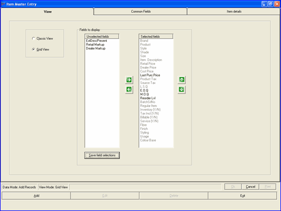
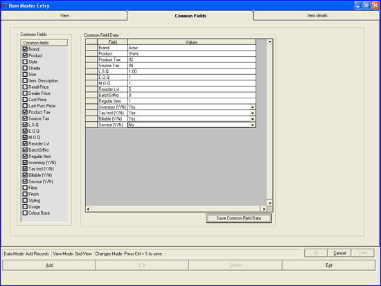
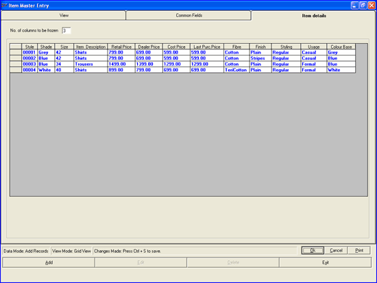
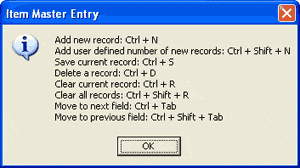
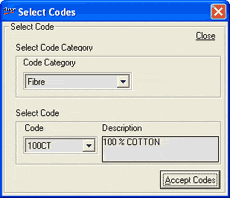

The Item Master Entry window is as shown.

Select the data entry format as Classic View or Grid View. If you select Classic View, data entry form will accept details of a single item. In Grid View you can enter details of one or multiple items. You can use cut/ copy and paste to fill the columns. If the records are available in MS-Excel sheet, with the same order of the fields, then the whole data can be copied and pasted into this grid.
Fields to display: Select the fields to be displayed for capturing item details.
Unselected fields: Displays the fields that are not selected for data entry.
Selected fields: Displays the fields that are currently selected for data entry. This list is based on the values selected during installation or on the settings you have chosen on this window and saved earlier.
In Unselected
fields click to select the fields you want to add for data capturing.
Multiple selections are possible. Click  to move the selected
fields to the Selected fields
list. You can use
to move the selected
fields to the Selected fields
list. You can use  to remove the field names from the Selected fields list. You can rearrange
the order of the fields in the Selected
fields list using
to remove the field names from the Selected fields list. You can rearrange
the order of the fields in the Selected
fields list using  and
and  .
.
Save field selections: Click to save the selections you made. If you do not save the selections, the fields list will be available only for the current session. Even if you save these selections, they can be changed in subsequent sessions, if required.
Click Common Fields to display the tab. Alternatively, press Alt+2. The Common Fields tab is as shown.

Common Fields: All the fields under Selected fields in the View tab are displayed here. Select the fields you want to treat as common fields during data entry. Data entry for the fields selected here need to be done only once for a session.
Common Field Data: The selected common field names are displayed in the grid. Enter data for the common fields.
Save Common Field Data: Click to save the common data you have entered. If you do not save the data, it will be available only for the current session. Even if you save these values, they can be changed in subsequent sessions, if required.
Click Item details to display the tab. Alternatively, press Alt+3. The Item details tab is as shown, if you have selected Grid View.
Note: Click here to view a sample of this tab, if you have selected the Classic View. In classic view, the common fields’ data is displayed though not editable.

No. of columns to be frozen: Enter the number of columns at the left end to be visible in the grid always. Value can be between zero and six. This is useful only when the grid has many columns that are not visible by default.
Enter the details of as many items as required.
Tip: In Item details tab, press F1 to display the list of shortcut keys that can be used in Master Entry.

Note:
1. You can browse through the tabs and make changes, if required. Either click the corresponding tab name or press Alt+1 for View, Alt+2 for Common Fields and Alt+3 for Item details.
2. During data entry, if you want to choose any field value that is already catalogued, press F2. The Select Codes window will be displayed, a sample of which is shown below.

Make necessary selections and click Accept Codes.
Note: The field selections and common field data would be saved, if you have chosen to save those details, even if the data entered on Item details tab is not saved.
{kind=link}